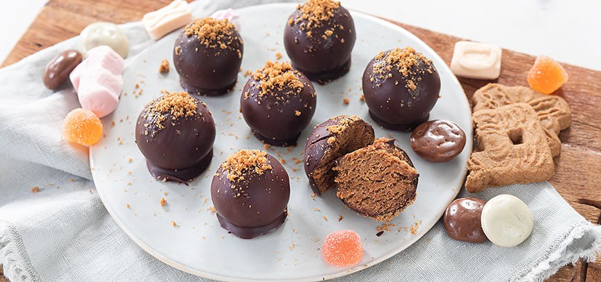

speculaas truffels
Dit snelle basisrecept voor verse tomatensoep staat binnen 20 minuten op tafel en lukt gegarandeerd.
Ingrediënten
- 135 gr speculaas (11 koekjes)
- 35 gr mascarpone (ca 2 eetlepels)
- 75 gr melk of pure chocolade
bereidingswijze
-
Maal de speculaasjes fijn in een keukenmachine of sla zo fijn mogelijk in een zak.
Houd ongeveer een eetlepel apart. Roer de roomkaas door de rest van de speculaaskruimels.
Draai er met je handen balletjes van, leg deze een half uurtje in de koelkast.
-
Smelt de chocolade au bain marie in een kom boven een pannetje met heet water. Rol de speculaasballetjes kort hier door en haal er uit met een vork en laat iets uitdruipen en leg dan op een plank met een stuk bakpapier. Bestrooi de bovenzijde met wat bewaarde speculaaskruimels.
Zet ze dan in de koelkast en laat nog een uurtje opstijven.
- Bewaar ze afgesloten in de koelkast en haal ze kort voor het serveren uit de koelkast.
